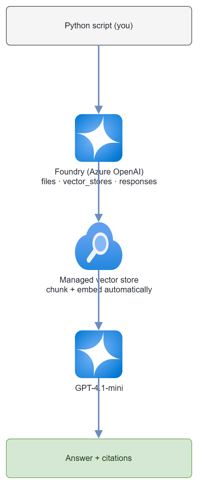

Build it yourself. This project is part of the AI Projects for Cloud Solution Architects portfolio. Full source, code, and the latest updates live in the csa-ai-projects repo on GitHub.
Give your documents a voice. This guide wires up File Search on Microsoft Foundry so you can upload any document and get cited, accurate answers back in seconds — no custom chunking, no vector DB to manage.
Platform note: This demo runs on your Microsoft Foundry / Azure AI Services resource using the Foundry Models endpoint (
https://<resource>.cognitiveservices.azure.com/) through the OpenAI-compatible Responses API. That's one of two valid Foundry RAG paths — see When to graduate to Foundry Agent Service for the other.
What You're Building
A Python script that uploads a document to your Microsoft Foundry resource, creates a managed vector store over it, then uses the Responses API with file_search to answer questions in plain English. Every answer includes document citations so you can verify every claim.
This is the fastest path to production RAG (Retrieval-Augmented Generation) — no embeddings code, no external vector database, no agent framework required.
Business Value
| Who | Any team that needs answers from internal documents — legal, HR, finance, engineering |
| Why | Reduces time-to-answer from hours of manual search to seconds; every answer is cited so it can be verified |
| Outcome | A reusable RAG pattern you can demo to any customer in under 10 minutes, then leave behind as a co-build starter |
Prerequisites
- Azure subscription with an Azure AI Services resource deployed (kind:
AIServices, SKU:S0). Create one in the Azure Portal under Azure AI Services, or via CLI:bash az cognitiveservices account create \ --name <your-resource-name> \ --resource-group <your-rg> \ --kind AIServices \ --sku S0 \ --location eastus - A
gpt-4.1-minimodel deployment on that resource. The script calls the model by its deployment name, so this must exist or every request fails with a model-not-found error. First list the model versions available in your region, then create the deployment: ```bash # 1. See available gpt-4.1-mini versions for your region az cognitiveservices account list-models \ --name\ --resource-group \ --query "[?name=='gpt-4.1-mini'].{model:name, version:version, format:format}" -o table
# 2. Create the deployment (the deployment name must match MODEL in the script: gpt-4.1-mini)
az cognitiveservices account deployment create \
--name
The deployment name must match the
MODELconstant insrc/ask_my_docs.py(gpt-4.1-mini). If you deploy under a different name, update the script to match. - Python 3.11+ -openai >= 1.30.0,azure-identity, andpython-dotenvinstalled - Azure CLI logged in (az login) with Cognitive Services OpenAI Contributor on the resource (the lower "Cognitive Services User" role does not grant permission to upload files)
Assign the RBAC (Role-Based Access Control) role via CLI:
bash
az role assignment create \
--assignee $(az ad signed-in-user show --query id -o tsv) \
--role "Cognitive Services OpenAI Contributor" \
--scope /subscriptions/<sub-id>/resourceGroups/<rg>/providers/Microsoft.CognitiveServices/accounts/<resource-name>
- A document you want to query (PDF, .txt, .md — a product spec, runbook, or policy works great)
pip install "openai>=1.30.0" azure-identity python-dotenv
Architecture

Data flow: Document uploaded → chunked and embedded automatically → stored in a managed vector store → retrieved at query time → passed as context to GPT-4.1-mini → response includes source citations.
Pre-Demo Checklist
Run through this before every demo to avoid surprises:
| # | Check | Notes |
|---|---|---|
| 1 | Azure subscription active | Confirm in portal.azure.com |
| 2 | AIServices resource deployed | az cognitiveservices account show --name <name> --resource-group <rg> |
| 3 | GPT-4.1-mini deployed | Deployment name must be gpt-4.1-mini. List with az cognitiveservices account deployment list --name <name> --resource-group <rg> -o table |
| 4 | Role assigned | Cognitive Services OpenAI Contributor — allow 5+ minutes for propagation after assignment |
| 5 | az login completed |
az account show should return your subscription |
| 6 | .env configured |
AZURE_OPENAI_ENDPOINT set to your resource endpoint |
| 7 | sample.txt in repo root |
Or substitute your own document |
⚠️ Role propagation lag: After assigning the Cognitive Services OpenAI Contributor role, wait at least 5 minutes before running the script. The API will return a 403 until propagation completes.
Step-by-Step Build
Already done for you: The complete, runnable script is at
src/ask_my_docs.pyin this repo. You don't need to write any code — just follow Steps 1–2 to configure your environment, then jump to Test It to run it.Want to build it yourself? That's a great way to learn. Create a new file (e.g.
src/my_ask_my_docs.py), then copy each code block from Steps 3–6 below into it in order — top to bottom. Every block is a self-contained piece; together they form the complete script. You can also opensrc/ask_my_docs.pyalongside this guide to see exactly how each step maps to the finished code.The steps below explain what each part of the script does so you understand it well enough to adapt it for your own projects.
| Guide step | Where it lives in src/ask_my_docs.py |
|---|---|
| Step 1 — Set endpoint | .env file + load_dotenv() at the top |
| Step 2 — Install deps | one-time terminal command |
| Step 3 — Create client | lines 28–37, the AzureOpenAI(...) block |
| Step 4 — Upload + vector store | upload_pdf() and create_vector_store() functions |
| Step 5 — Ask questions | ask() function |
| Step 6 — Wire together | main() at the bottom |
Step 1 — Set your endpoint
# Your Azure AI Services endpoint — find it in the Azure Portal:
# Cognitive Services resource → Keys and Endpoint
export AZURE_OPENAI_ENDPOINT="https://<your-resource-name>.cognitiveservices.azure.com/"
Store it in a .env file — never hardcode it. Copy .env.example to get started:
cp .env.example .env
# Then edit .env and set AZURE_OPENAI_ENDPOINT
API version note: The script currently uses
2025-04-01-preview. If a stable GA version is available for your deployment, prefer it — check Azure OpenAI API releases and updateapi_versioninsrc/ask_my_docs.pyaccordingly.
Step 2 — Install dependencies
pip install "openai>=1.30.0" azure-identity python-dotenv
Step 3 — Create the client
import os
from dotenv import load_dotenv
from azure.identity import DefaultAzureCredential, get_bearer_token_provider
from openai import AzureOpenAI
load_dotenv()
ENDPOINT = os.environ["AZURE_OPENAI_ENDPOINT"]
# get_bearer_token_provider wraps DefaultAzureCredential for use with openai SDK
token_provider = get_bearer_token_provider(
DefaultAzureCredential(),
"https://cognitiveservices.azure.com/.default"
)
openai = AzureOpenAI(
azure_endpoint=ENDPOINT,
azure_ad_token_provider=token_provider,
api_version="2025-04-01-preview",
)
DefaultAzureCredential picks up your az login token automatically. No API keys needed.
Step 4 — Upload your document and create a vector store
import pathlib
import time
def upload_pdf(pdf_path: str):
"""Upload a document to your Foundry resource and return the file object."""
path = pathlib.Path(pdf_path)
print(f"Uploading {path.name} ({path.stat().st_size // 1024} KB)...")
with open(path, "rb") as f:
uploaded = openai.files.create(file=f, purpose="assistants")
print(f" File ID: {uploaded.id} status={uploaded.status}")
return uploaded
def create_vector_store(file_id: str, store_name: str):
"""Create a vector store, attach the file, and poll until indexed."""
print(f"Creating vector store '{store_name}'...")
vs = openai.vector_stores.create(name=store_name, file_ids=[file_id])
print(f" Vector store ID: {vs.id} status={vs.status}")
for _ in range(30):
if vs.status == "completed":
break
time.sleep(3)
vs = openai.vector_stores.retrieve(vs.id)
print(f" Waiting for indexing... status={vs.status}")
else:
raise TimeoutError("Vector store indexing did not complete within 90 seconds.")
print(f" Indexing complete. Chunks indexed: {vs.file_counts.completed}")
return vs
Gotcha: For large PDFs (>50 MB) indexing can take a couple of minutes. The polling loop above retries for up to 90 seconds; increase
range(30)andtime.sleep(3)for larger files.
Step 5 — Ask a question using the Responses API
In the Responses API, you pass the file_search tool directly to openai.responses.create(). No separate agent registration needed for basic Q&A.
def ask(question: str, vector_store_id: str, model: str = "gpt-4.1-mini"):
"""Ask a question grounded in the vector store."""
response = openai.responses.create(
model=model,
input=question,
instructions=(
"Answer only using the provided documents. "
"Always cite the source file and section. "
"If the answer is not in the documents, say so — do not guess."
),
tools=[{
"type": "file_search",
"vector_store_ids": [vector_store_id],
}],
include=["file_search_call.results"],
)
# Extract answer text and citations from output items
answer = ""
annotations = []
for item in response.output:
if hasattr(item, "type") and item.type == "message":
for block in item.content:
if hasattr(block, "text"):
answer = block.text
if hasattr(block, "annotations"):
annotations.extend(block.annotations)
# Resolve file IDs to human-readable filenames
file_cache = {}
def get_filename(file_id):
if file_id not in file_cache:
try:
file_cache[file_id] = openai.files.retrieve(file_id).filename
except Exception:
file_cache[file_id] = file_id
return file_cache[file_id]
print(f"💬 {answer}")
for ann in annotations:
# Responses API file_search annotations are AnnotationFileCitation objects
# with flat fields (type/file_id/filename), not a nested `ann.file_citation`.
if getattr(ann, "type", None) == "file_citation":
filename = getattr(ann, "filename", None) or get_filename(ann.file_id)
print(f" ↳ Source: {filename}")
return answer, annotations
Model note: GPT-4.1-mini is the right pick here — fast and cheap for Q&A. Switch to GPT-4.1 if you need deeper reasoning over complex technical docs.
Step 6 — Wire it all together
def main():
PDF_PATH = "your-document.pdf" # ← change to your PDF
STORE_NAME = "ask-my-docs-store"
uploaded = upload_pdf(PDF_PATH)
vs = create_vector_store(uploaded.id, STORE_NAME)
questions = [
"What is the main subject of this document?",
"List any key requirements or commitments mentioned.",
"Are there any deadlines or dates referenced?",
]
print("\n" + "="*60)
for q in questions:
print(f"\n❓ {q}")
answer, annotations = ask(q, vs.id)
print(f"\nTo reuse: VECTOR_STORE_ID={vs.id}")
if __name__ == "__main__":
main()
The complete, runnable version of this script is at src/ask_my_docs.py in this repo.
Test It
Run the script against sample.txt (included in the repo) to verify everything works before using your own document:
# Ensure .env is set with your AZURE_OPENAI_ENDPOINT
python src/ask_my_docs.py
Expected output:
Uploading sample.txt (0 KB)...
File ID: assistant-abc123 status=processed
Creating vector store 'ask-my-docs-store'...
Vector store ID: vs-xyz789 status=in_progress
Waiting for indexing... status=completed
Indexing complete. Chunks indexed: 1
============================================================
❓ What is the main subject of this document?
💬 The main subject of the document is ramp-up guidance for new Cloud Solution
Architect (CSA) hires at Microsoft, including key requirements, milestones, and
important dates within the first 90 days.
❓ List any key requirements or commitments mentioned.
💬 1. Complete Azure Fundamentals certification within 30 days.
2. Shadow 3 customer engagements in the first 60 days.
3. Deliver your first technical presentation by day 90.
❓ Are there any deadlines or dates referenced?
💬 Yes — Day 30: AZ-900 deadline, Day 60: debrief due, Day 90: ramp-up review.
============================================================
Done. To reuse this vector store, set VECTOR_STORE_ID=vs-xyz789
To query your own document, edit src/ask_my_docs.py and change the _REPO_ROOT / "sample.txt" line to point at your file.
Try a "trap question" — this is a critical demo moment:
ask("What is the quarterly revenue target for CSAs in FY26?", vs.id)
⚠️ Important: With a soft instruction like
"If the answer is not in the documents, say so", the model may still hallucinate a confident-sounding answer (e.g. "$10 million per quarter") even when that information isn't in your document at all. This is a known LLM behavior — the model fills gaps with plausible-sounding training data.Use a stronger instruction to enforce abstention:
python instructions=( "You MUST NOT answer from general knowledge. " "Only answer using information retrieved from the provided documents. " "If the answer cannot be found in the retrieved document chunks, respond with exactly: " "'I cannot find that information in the provided documents.' " "Do not guess, infer, or supplement from training data." )The complete script atsrc/ask_my_docs.pyuses this stronger instruction.CSA talk-track: "Watch what happens when I ask something that's not in the document. Notice there are no source citations in the answer — that's your signal. Always show customers both the answer AND the citations. No citations means treat the answer with suspicion. This is why grounding and citation display matter in production."
Add a second document:
with open("second-doc.pdf", "rb") as f:
uploaded2 = openai.files.create(file=f, purpose="assistants")
# Add to existing vector store
openai.vector_stores.files.create(
vector_store_id=vs.id,
file_id=uploaded2.id
)
⚠️ Deprecation notice: The older Assistants API (threads, runs,
beta.assistants.*) retires on 26 August 2026. This guide already uses the replacement — the Responses API — so no migration is needed. If you encounter tutorials usingclient.beta.assistantsorcreate_thread(), they will stop working after that date.
Common Mistakes
- Scanned PDFs return empty text. The file upload API does basic text extraction. If your PDF is a scanned image, pre-process it with Azure AI Document Intelligence first (see Guide 05).
- Model answers questions not in the docs. A soft instruction like
"If the answer is not in the documents, say so"is often not enough — the model can still hallucinate confident answers from its training data. Use a strong prohibition:"You MUST NOT answer from general knowledge. If the answer cannot be found in the retrieved document chunks, respond with exactly: 'I cannot find that information in the provided documents.'"The script atsrc/ask_my_docs.pyuses this pattern. - Reusing a vector store across sessions. Note the
VECTOR_STORE_IDprinted at the end of each run — pass it directly toask()instead of re-uploading your document every time.
Enterprise Considerations
Before taking this pattern to a production customer, address these five areas:
| Area | What to cover | Azure feature |
|---|---|---|
| Data privacy | Confirm data does not leave the tenant and is not used for model training | Azure OpenAI data privacy & DPA |
| Data residency | Documents stay in your chosen Azure region; use DataZone deployments for EU data boundary | Azure OpenAI in-region processing |
| Content safety | Enable Prompt Shields to block indirect prompt injection via uploaded documents | Azure AI Content Safety — Prompt Shields |
| Network security | Disable public access; route all traffic through Private Endpoints | Azure OpenAI Private Endpoints |
| Encryption | Data encrypted at rest by default; use Customer-Managed Keys (CMK) for regulated industries | Azure OpenAI CMK |
When to Use This vs. Alternatives
| Pattern | Best for | Not ideal for |
|---|---|---|
| This guide (Foundry File Search via Responses API) | Quick RAG over <100 documents, fast prototyping, single-tenant demos | Large document libraries, complex hybrid search, multi-index scenarios |
| Foundry Agent Service | Multi-tool agents, code interpreter, persistent agent definitions | Simple Q&A where agent overhead isn't needed |
| Azure AI Search + Foundry Models | Enterprise-scale search, hybrid keyword+semantic, metadata filtering at scale | Fast demo setup — higher configuration overhead |
| "Add your data" in Azure OpenAI Studio | No-code proof of concept | Production deployments, programmatic control |
CSA talk-track: "We're using the simplest possible pattern here — no infrastructure beyond an Azure AI Services resource. This gives you a demo in 10 minutes. When you need filters, access control per document, or millions of documents, Azure AI Search is the right layer to add underneath."
When to graduate to Foundry Agent Service
The Responses API + File Search used in this guide is the right call for stateless Q&A — fewest moving parts, no agent lifecycle to manage. Reach for Foundry Agent Service (the azure-ai-projects SDK, project endpoint https://<resource>.services.ai.azure.com/api/projects/<project>) when you need:
- a persistent agent you register once and reuse,
- conversation threads that retain memory across turns,
- multiple tools on one agent (Code Interpreter, function calling, web search), or
- multi-agent orchestration.
Both paths run on the same Foundry resource — Guides 06, 10, and 12 use Agent Service where that extra structure earns its keep.
Extend It
- Multi-tenant isolation: Create a separate vector store per user/team. Pass the correct
vector_store_idbased on the authenticated user's group membership from Entra ID. - Streaming responses: Use
openai.responses.stream()instead ofcreate()and yield tokens to a frontend for real-time display. - Slack / Teams bot: Wrap the
ask()function in an Azure Function with an HTTP trigger, then register it as a Teams bot via Bot Framework. Your whole org can query docs from Teams.
Cost Transparency
Vector storage is not free. Understand the charges before a customer ask:
| Cost item | Pricing | Notes |
|---|---|---|
| Vector storage | ~$0.10/GB/day | First 1 GB included free per resource |
| File Search queries | Included in model token cost | No separate per-query charge |
| File upload | No charge | Storage cost begins after upload |
Clean up unused vector stores to avoid ongoing charges. A ready-to-run cleanup script is at src/cleanup.py in this repo:
# List everything and prompt before deleting (interactive)
python src/cleanup.py
# Delete everything without prompting (e.g. in a CI teardown)
python src/cleanup.py --delete
Run it from the repo root after any demo session. It lists all vector stores and uploaded files, shows their sizes, and prompts before deleting.
Tip for demos: Run
python src/cleanup.pyat the end of every demo session. The script uses the same.envandaz logintoken as the main script — no extra setup needed.